![[Sample img/PolyGk.png]](img/PolyGk.png)
PolyGk covers ISO-8859-7 and CP1253.
The Linux console distinguishes between encodings and codesets. The encoding determines the meaning of bytes or byte sequences by mapping positions to abstract characters. If the encoding is not Unicode, it is typically one of the standard 8-bit encodings such as ISO-8859-1 (which is then internally translated to Unicode). On the other hand, the codeset determines which characters are supported by a font. This set of characters need not be in one-to-one correspondence to the set of characters supported by the chosen encoding: If the encoding is Unicode, the codeset will contain only a subset of all Unicode characters; if the encoding is an 8-bit encoding such as ISO-8859-1, the codeset may contain additional characters that are not included in the encoding.
The Linux console supports fonts with upto 512 glyphs. However, the full set of console colors (eight regular and eight bright colors) is only available if the number of glyphs in the current font does not exceed 256. If a font that contains more than 256 glyphs is used, the eight bright colors are lost.
UW ttyp0 can be installed on the Linux console with various 256-glyph and 512-glyph codesets. In order to cover as many languages as possible with a limited number of glyphs, these codesets represent characters with the same or a very similar appearance by the same glyph. That means, for instance, that the Greek Η (Eta), the Cyrillic Н (En) and the Latin H share the same glyph, but also, that the empty set character ∅ may look like the Danish Ø (O with stroke), or that the Yen character ¥ (Y with double horizontal stroke) may look like the Kazakh Cyrillic character Ұ (Y with single horizontal stroke) in some fonts.
The Linux console does not support the composition of glyphs from combining characters. For European languages, this is unproblematic. Many languages, however, use characters that can only be represented in Unicode as a combination of a base character and one or more combining characters. For example the Navajo letter “ą́” consists of “ą” (small “a” with ogonek) plus a combining acute accent “◌́” and the Yoruba letter “ẹ̀” consists of “ẹ” (small “e” with dot below) plus a combining grave accent “◌̀”. Similarly, the name of the Thai district “ลี้” (“Li”) consists of the consonant letter “ล”, the combining vowel sign “◌ี”, and the combining tone mark “◌้” stacked above each other. The codesets below contain the combining characters necessary for these languages, but without support from the console driver, they will be displayed wrongly: after the base letter instead of above/below the base letter. Moreover, text editors will then make incorrect assumptions about the cursor position, leading to further display problems. For Hebrew vowel marks, the situation is even worse, because the right-to-left writing direction exacerbates the problem. (Actually, the Linux console font format PSF makes it possible to declare that some glyph corresponds to a sequence of a base letter and a combining accent, so a limited support for combining accents should be possible. Regrettably, the Linux console driver seems to ignore these declarations.)
TL;DR: The description of the available codesets below is quite lengthy. If you need a codeset that supports a particular list of properties, character sets, languages, or characters, try the Interactive Codeset Selector.
The following 256-glyph codesets extend one or more ISO-8859 (or similar) encodings. They also support basic (single-line) line graphics.
The WET codeset
covers ISO-8859-1/CP1252, ISO-8859-15 (W Eur Latin), and
ISO-8859-9/CP1254 (Turkish).
It also supports Slovene:
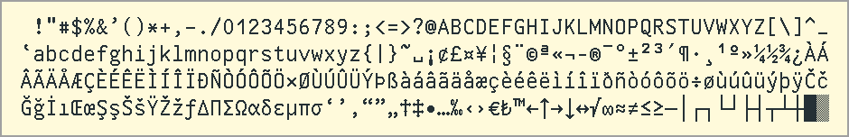
The WCE codeset
covers ISO-8859-2 (E Eur Latin) except spacing accents,
ISO-8859-15 (W Eur Latin), and ISO-8859-16 (SE Eur Latin):
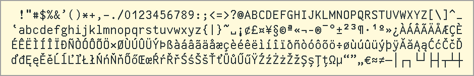
The CEu codeset
covers ISO-8859-2/CP1250 (E Eur Latin).
It also supports Spanish (except ¡, ¿, ª, º) and Swedish:
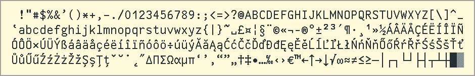
The Bal codeset
covers ISO-8859-13/CP1257 (Baltic, Scandinavian, Polish).
It also supports French:
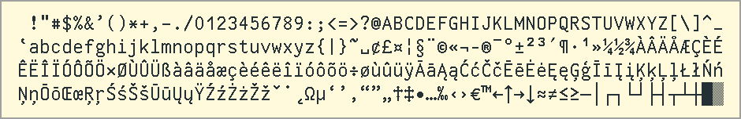
The Sam codeset
covers ISO-8859-1/CP1252, ISO-8859-15 (W Eur Latin), and CP1270 (Sami).
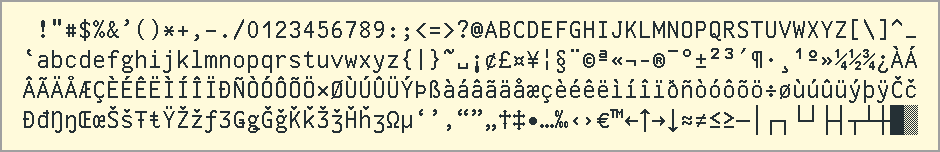
The NWE codeset
covers ISO-8859-14 (Celtic):
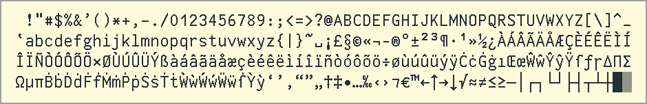
The SEu codeset
covers ISO-8859-3 (Esperanto, German, Italian, Maltese, Spanish, Turkish).
It also supports Croatian, Dutch, French, and Swedish:
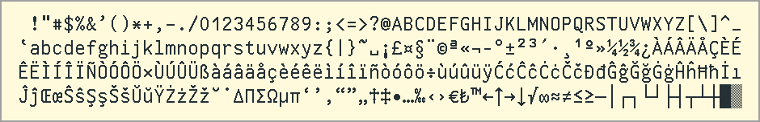
The GkC codeset
covers ISO-8859-7/CP1253 (Greek).
It also supports Albanian, Croatian, Romanian, and Turkish:
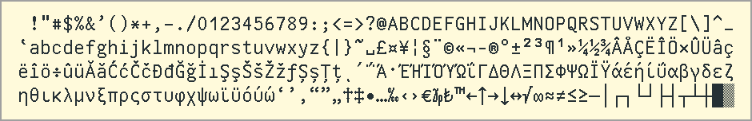
The GkW codeset
covers ISO-8859-7 (Greek).
It also supports Dutch, French, German, Italian, Portuguese, Spanish,
and Swedish:
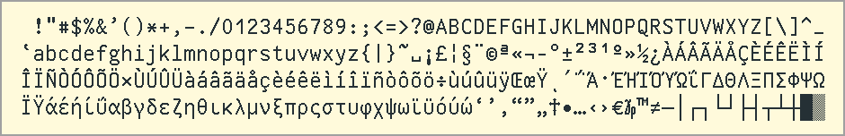
The EEC codeset
covers ISO-8859-5/CP1251 (E Eur Cyrillic).
It also supports Croatian and Montenegrin:
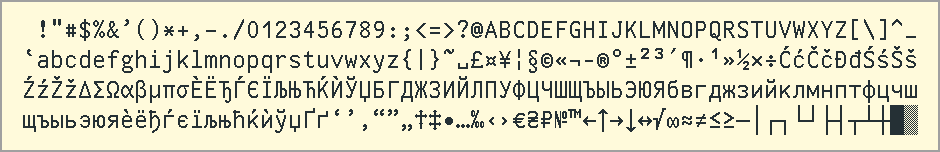
The EEW codeset
covers ISO-8859-5 (E Eur Cyrillic).
It also supports Estonian, French, German, Italian, and Swedish:
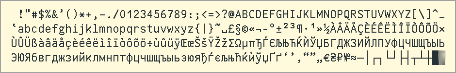
The EEA codeset
covers PARATYPE-PT154 (Asian Cyrillic).
It also supports Evenki, Komi, Nenets, Ossetian, and Ukrainian:
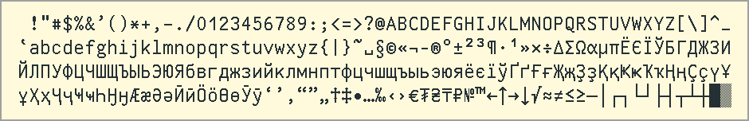
The HbR codeset
covers ISO-8859-8 (Hebrew).
It also supports Russian and Ukranian:
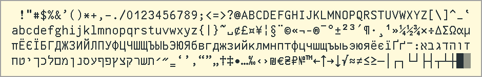
The HbW codeset
covers ISO-8859-8 (Hebrew).
It also supports Dutch, French, German, Italian, Spanish (except ª, º), Swedish,
and Turkish:
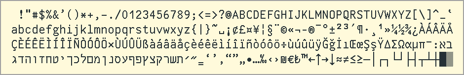
The Arm codeset
covers ARMSCII-8.
It also supports French:
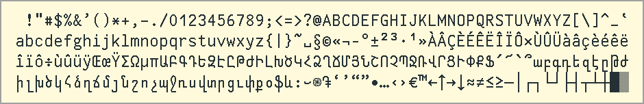
The Geo codeset
covers Georgian-PS/Georgian-Academy (except some Latin letters).
It also supports Azeri, French, German,
and Turkish:
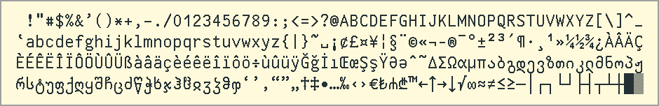
The AfP codeset
supports Bambara, Fulfulde, Hausa, Kanuri, Kikuyu, Lingala, Luganda, Moore,
Twi, Wolof, and many other indigenous languages
from West, Central, and East Africa
(except Southern Nigeria),
as well as French, Portuguese, and Spanish:
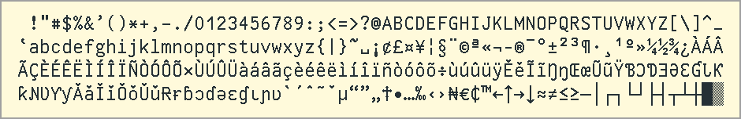
Note that the Linux console does not handle
combining characters correctly.
The AfP codeset
supports most indigenous Southern African languages, such as
Chewa/Nyanja, Herero, Malagasy, Nama/Damara, Pedi, Tswa, and Venda,
as well as Afrikaans, Dutch, French, German, Italian, Portuguese,
Slovene, Spanish, and Swedish:
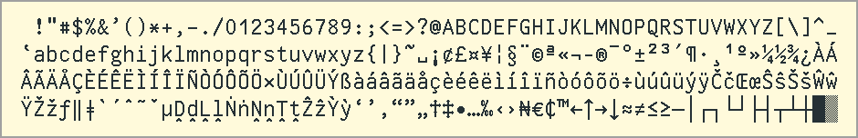
Note that the Linux console does not handle
combining characters correctly.
The AfU codeset supports
Ibibio, Igbo, Izon, Kirike, Yoruba
and other indigenous African languages primarily from Southern Nigeria,
as well as French, Portuguese, and Spanish:
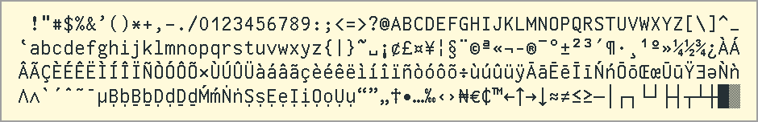
Note that the Linux console does not handle
combining characters correctly.
The MSA codeset
supports many indigenous languages of Mexico and Central and South America,
as well as Dutch, French, German, Italian, Portuguese, and Spanish:
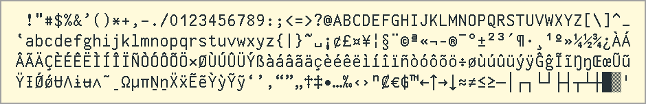
Note that the Linux console does not handle
combining characters correctly.
The Tha codeset
covers TIS 620-0/ISO-8859-11.
It also supports Dutch, German, Irish, and Spanish (except ¡, ¿, ª, º):
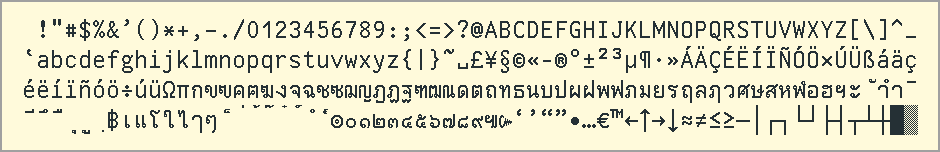
Note that the Linux console does not handle
combining characters correctly.
The Vie codeset
covers TCVN-5712/VISCII-1.1:
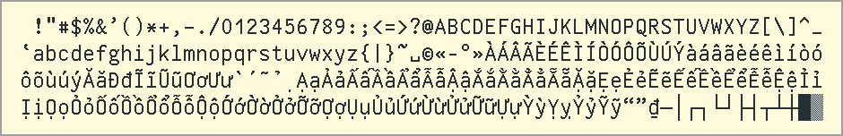
The SAO codeset
supports many languages of Southeast and East Asia, Australia, and Oceania,
as well as Dutch, French, German, Italian, Portuguese, and Spanish:
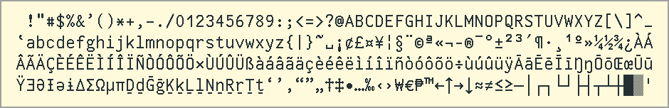
Note that the Linux console does not handle
combining characters correctly.
The following 256-glyph codesets are more or less based on the traditional IBM PC code pages. Empty slots in the original code pages are filled with currency signs (€, ₺, ₪) and mathematical symbols (≤, ≥, ≠).
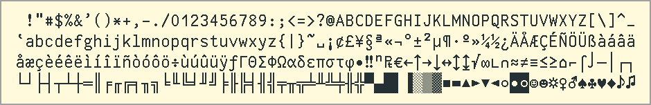
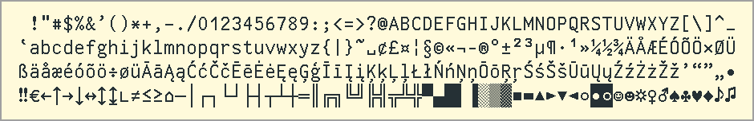
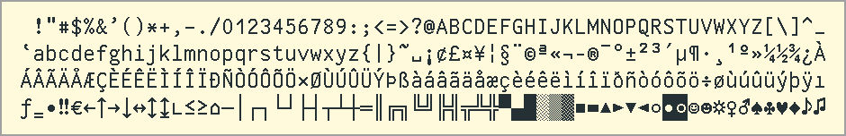
Note that CP850 is supposed to support French, but does not contain
Œ, œ, and Ÿ.
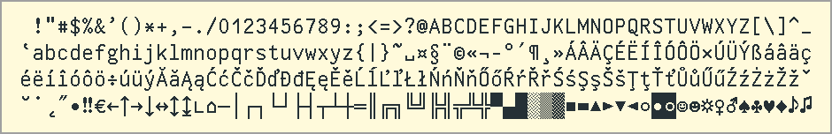
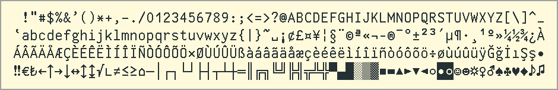
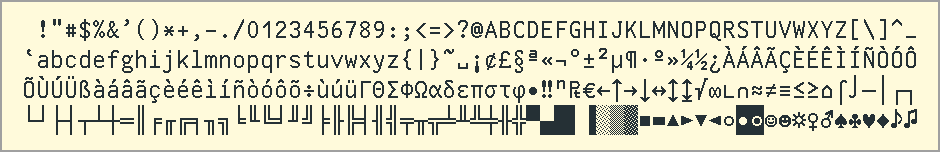
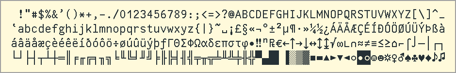
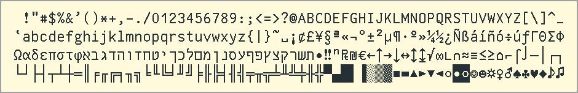
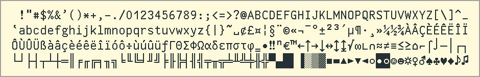
Note that CP863 is supposed to support French, but does not contain
Œ, œ, Ÿ, and ÿ.
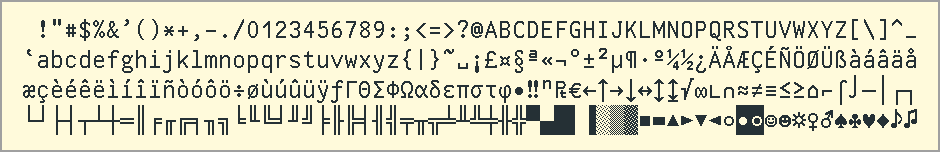
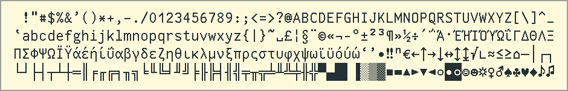
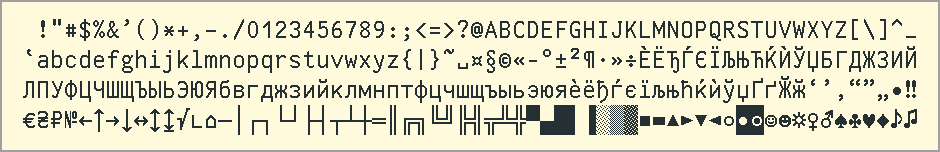
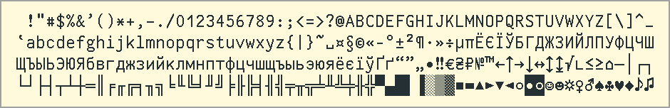
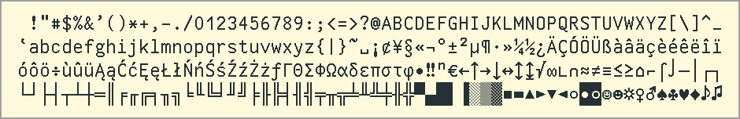
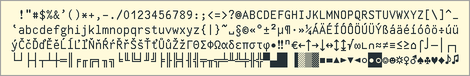
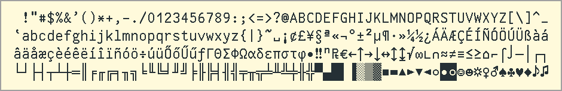
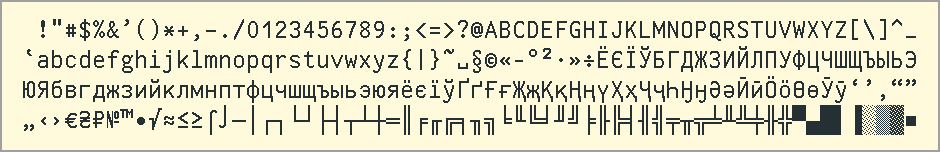
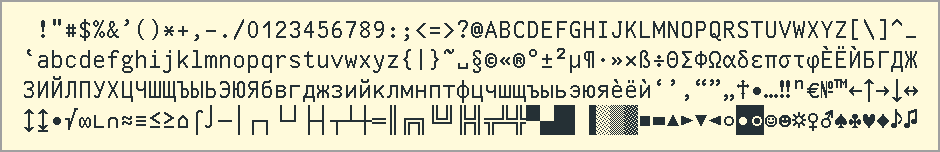
Braille is a tactile writing system for people who are blind or have low vision. The Brl codeset contains the 256 Braille symbols in Unicode.
The 512-glyph codesets for UW ttyp0 on the Linux console fall into two categories: standard codesets and combined Braille codesets.
The UW ttyp0 distribution provides 21 standard 512-glyph codesets.
All of them contain the following (or similar) glyphs:
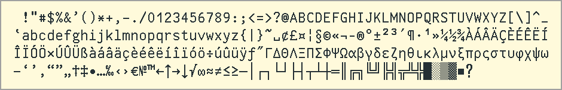
That means that they all cover ASCII,
some accented letters,
basic typographic and mathematical characters
(including non-accented Greek),
and line graphics
(single-line and double-line, but not mixed).
Most of the standard codesets
(except AAEGGH, OldCyr,
and PolyGk)
come in four variants,
denoted by the suffixes _L,
_M, _C, and _P.
The _L codesets support additional scripts and languages
and are explained below.
The _M codesets support additional
mathematical and technical characters:
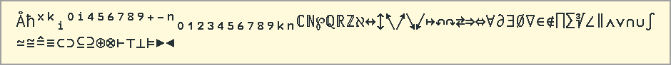
The _C codesets support the full set of IBM CP 437 graphics:
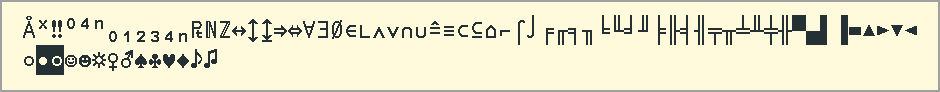
The _P codesets support Powerline characters
and some more graphics characters that are useful for
prompts or status lines:
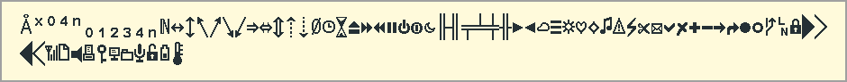
Note that the last 18 characters in the _P sample
are located in the Unicode Private Use Area,
which means that they may not be supported by other fonts
– the last 11 characters are available in Font Awesome
and in patched “Nerd Fonts”,
the remaining 7 are available in “Nerd Fonts” and
in Powerline-compatible fonts.
(The last 11 characters would also be available in Unicode Plane 1
(that is, characters between U+10000 and U+1FFFF);
unfortunately, the Linux console supports only Plane 0,
that is, characters between U+0000 and U+FFFF.)
The WEur codesets support almost all Latin-script
languages of Europe and Western Asia
(except Azeri, Laz, Livonian,
Finnish Romani, and Skolt Sami)
as well as monotonic Greek:
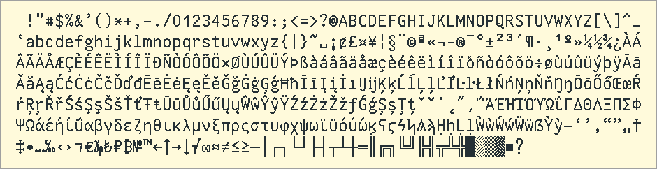
WEur_L supports also Finnish Romani, Skolt Sami and all Slavic Cyrillic-script languages:
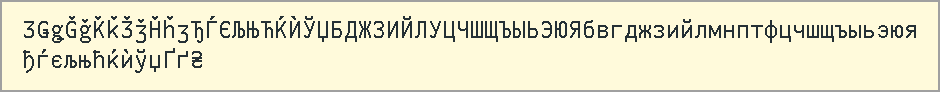
WEur_{M,C,P,L} covers
ISO-8859-1/2/7/9/13/15/16 and CP1250/1252/1253/1254/1257;
WEur_L covers also ISO-8859-5 and CP1251/1270.
For accented Danish, dotted Irish, Old English, and Old Norse see NWEu;
for Livonian see NEur;
for Azeri see CEur_L,
EECA,
Armn,
and Geor;
for Laz see Geor;
for polytonic Greek see PolyGk;
for Finnish Romani and Skolt Sami see also
NEur;
for Cyrillic see also CEur,
NEur,
and EECA.
The CEur codesets support most Latin-script languages
of Europe and Western Asia (except Asturian, Azeri, Faroese, Icelandic,
Latvian, Laz, Livonian, Lithuanian, Maltese,
Finnish Romani, Macedonian Romani, Sami, Welsh),
monotonic Greek, and all Slavic Cyrillic-script languages:
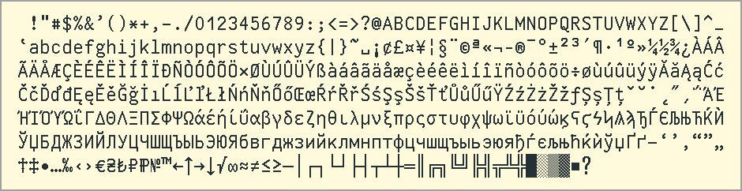
CEur_L supports almost all Latin-script languages
of Europe, Western Asia, and Central Asia (except Asturian, Laz, Livonian, Finnish Romani,
and Skolt Sami),
monotonic Greek,
all Slavic Cyrillic-script languages,
Gagauz (Cyr), Moldovan (Cyr),
and some Cyrillic-script languages of Central Asia, e.g.,
Kyrgyz, Mongolian, Tatar, and Turkmen:
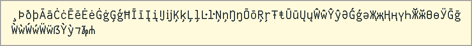
CEur_{M,C,P,L} covers
ISO-8859-2/5/9/16 and CP1250/1251/1253/1254;
CEur_L covers also ISO-8859-1/7/13/15 and CP1252/1257;
CEur_C covers also KOI8 (Rus/Ukr).
For Asturian see WEur
and NWEu_L;
for Sami, Livonian, and Finnish Romani see NEur;
for Laz see Geor;
for polytonic Greek see PolyGk;
for Old Cyrillic see OldCyr;
for Esperanto and further non-European currency symbols see Espr.
For Icelandic, Maltese, Welsh, the Dutch “IJ/ij” ligature, the Catalan “Ŀ/ŀ”, the German capital “ẞ”, and the Irish “⁊” sign see also WEur and NWEu;
for Azeri see also EECA,
Armn,
and Geor;
for Faroese, Latvian, and Lithuanian see also WEur, NWEu, and NEur;
for Macedonian Romani see also
Espr
and EECA_L;
for Gagauz (Cyr) and Moldovan (Cyr) see also
EECA.
The NEur codesets support in particular Latin-script and
Cyrillic-script languages spoken north of the
line Paris–Berlin–Warsaw–Kyiv–Moscow, including
Livonian, Finnish Romani,
Skolt Sami, Kildin Sami, Nenets, and Komi,
plus Croatian, Italian, Portuguese, and Spanish (except ª, º):
NEur_L supports also almost all Latin-script languages
of Europe and Western Asia (except Asturian, Laz, Maltese, and Welsh),
all Slavic Cyrillic-script languages,
and some Cyrillic-script languages of Central Asia, e.g.,
Kazakh, Kyrgyz, Mari, Mongolian, Selkup, Tatar, Turkmen, and Uzbek:
NEur_{M,C,P,L} covers
ISO-8859-13 and CP1257;
NEur_L covers also ISO-8859-1/2/5/9/15/16 and CP1250/1251/1252/1254/1270;
NEur_C covers also KOI8 (Rus/Ukr).
For accented Danish, dotted Irish, Old English, and Old Norse see NWEu;
for Maltese, Welsh, the Dutch “IJ/ij” ligature, the Catalan “Ŀ/ŀ”, the German capital “ẞ”, and the Irish “⁊” sign see WEur and NWEu.
The EECA codesets support almost all Latin-script and
Cyrillic-script languages spoken in Europe and North/Central Asia
east of the line
Murmansk–St. Petersburg–Minsk–Bucharest–Sofia–Ankara
(except Kildin Sami, Abkhaz, Enets, Laz (Lat), and Orok), plus
Danish, Dutch, German, Spanish (except ª, º), and Swedish:
EECA_L supports also
Enets, Orok,
all Cyrillic-script languages of Europe except Kildin Sami
and most Latin-script
languages of Europe (except Asturian, Latvian,
Livonian, Maltese, Finnish Romani, Sami, and Welsh):
EECA_{M,C,P,L} covers
PARATYPE-PT154;
EECA_L covers also ISO-8859-1/2/5/9/15/16 and CP1250/1251/1252/1254;
EECA_C covers also KOI8 (Rus/Ukr).
For Latvian, Livonian, Lithuanian, and Sami
see NEur;
for Abkhaz and Laz see Geor.
The Hebr codesets support (unpointed) Hebrew, Yiddish,
most Latin-script languages of Europe and Western Asia (except Asturian, Azeri, Faroese, Icelandic,
Latvian, Livonian, Lithuanian, Maltese,
Finnish Romani, Macedonian Romani, Sami, Welsh),
as well as Bulgarian and Russian:
Hebr_L supports also Hebrew vowel marks,
Azeri (Lat), Faroese, Icelandic, Latvian, Lithuanian,
and all Slavic Cyrillic-script languages:
Hebr_{M,C,P,L} covers
ISO-8859-2/8/9/16 and CP1250/1254;
Hebr_L covers also ISO-8859-1/5/13/15 and CP1251/1252/1255/1257;
Hebr_C covers also KOI8 (Rus).
For romanized Arabic, monotonic Greek, Armenian, Georgian, and Esperanto
see AAEGGH.
Note that the Linux console does not handle
combining characters correctly.
The Armn codesets support Armenian,
Azeri (Lat), Belarusian, Bulgarian,
Danish, Dutch, French, German, Italian,
Norwegian, Ossetian, Portuguese, Romanian,
Russian, Slovene, Spanish, Swedish,
Turkish, and Ukrainian:
Armn_L supports also Georgian, Laz (Geo), Mingrelian, Svan,
monotonic Greek,
Croatian, Hungarian, and Moldovan (Cyr):
Armn_{M,C,P,L} covers
ARMSCII-8, ISO-8859-9, and CP1254;
Armn_L covers also CP1253 and GEORGIAN-ACADEMY/-PS;
Armn_C covers also KOI8 (Rus/Ukr).
For Abkhaz, Kazakh (Lat/Cyr), Laz (Lat), Turkmen (Lat/Cyr), and Uzbek (Lat/Cyr) see Geor_L;
for Azeri (Cyr) see EECA;
for romanized Arabic, Hebrew, and Esperanto
see AAEGGH.
The Geor codesets support Georgian, Laz (Geo/Lat), Mingrelian, Svan,
Abkhaz, Azeri (Lat),
Belarusian, Bulgarian,
Danish, Dutch, French, German, Kazakh (Lat/Cyr),
Mongolian, Ossetian, Russian, Spanish (except ¡, ¿, ª, º),
Swedish, Tatar, Turkish, Turkmen (Lat/Cyr),
Ukrainian, and Uzbek (Lat/Cyr):
Geor_L supports also Armenian:
Geor_{M,C,P,L} covers
GEORGIAN-ACADEMY/-PS;
Geor_L covers also ARMSCII-8;
Geor_C covers also KOI8 (Rus/Ukr).
For more European Latin-script languages and monotonic Greek see Armn_L;
for Azeri (Cyr) see EECA;
for romanized Arabic, Hebrew, and Esperanto
see AAEGGH.
The AAEGGH codeset supports (unpointed) Hebrew, Yiddish,
romanized Arabic, Armenian, Georgian, Laz (Geo), monotonic Greek,
Esperanto,
and some Latin-script languages of Europe, e.g., Danish,
Dutch, French, German, Spanish, and Swedish:
AAEGGH covers
ISO-8859-7/8, CP1253,
ARMSCII-8,
and GEORGIAN-ACADEMY/-PS.
For a larger choice of Arabic romanization schemes see NAfr;
for Hebrew and Yiddish see also Hebr;
for Armenian and Georgian see also Armn and Geor.
Note that the Linux console does not handle
combining characters correctly.
The NAfr codesets support
Northern and Southern Berber languages (Lat/Tfn),
romanized Arabic
and Hassaniya Arabic,
Dutch, French, German, Slovene, Spanish, and Swedish:
NAfr_L supports further African languages, e.g.,
Bambara, Dazaga, Dinka, Fulfulde, Ga, Hausa,
Kanuri, Luganda, Moore, Nuer, Serer, Tedaga, Twi, Wolof, and Yoruba,
romanized Ancient Egyptian, and further European languages,
e.g., Danish, Italian, Maltese, Portuguese,
and Turkish:
NAfr_L covers ISO-8859-9 and CP1254.
Note that the Linux console does not handle
combining characters correctly.
The AfrP_{M,C,P} codesets
support almost all Latin-script languages spoken in Southern Africa
and most Latin-script languages spoken
in West Africa except Nigeria and Niger, Central Africa, and East Africa.
They also support European languages,
e.g., Danish, Dutch, French, German, Italian,
Portuguese, Spanish, and Swedish,
as well as romanized Japanese (Hepburn and Kunrei-shiki):
AfrP_L supports further African languages
as well as Chinese (Pinyin), Esperanto, and Slovene:
For African languages that use letters with underdot (ạḅḍẹḥịṇọṣụẓ),
underscore (ḇḏẖḵṯ), or undertilde (ḛḭṵ),
certain consonant letters with caron (čňřž), acute (ŕś), cedilla (şţ),
stroke (đɍŧ), or hook (ɦɽ),
or vowel letters with macron plus grave or acute (ḕḗṑṓ)
see also AfrU.
For Croatian, Czech, Hungarian, Icelandic, Polish, Romanian,
Slovak, and Turkish see AfrU_L.
Note that the Linux console does not handle
combining characters correctly.
The AfrU codesets support
almost all Latin-script languages spoken in Nigeria and Niger,
most Latin-script languages spoken in West, Central, and East Africa,
and some Latin-script languages spoken in Southern Africa.
They also support some European languages,
e.g., Danish, Dutch, French, German, Italian,
Portuguese, Slovene, Spanish, and Swedish,
as well as romanized Japanese (Hepburn and Kunrei-shiki):
AfrU_L supports further African languages as well as Croatian,
Czech, Hungarian, Icelandic, Polish, Romanian, and Slovak:
AfrU_L covers ISO-8859-1/2/9/15/16 and CP1250/1252/1254.
For African languages that use consonant letters with
circumflex (ĉĥŵŷẑ), diaeresis (ẅ), or low circumflex (ḓḽṋṱ),
“y” with grave or tilde (ỳỹ), “e” with cedilla (ȩ),
“o” with stroke and acute (ǿ),
or certain rare phonetic letters (ɑꞵƈɤƒɠɥɪɉʝɯɵƥᵽʃƭʉʊⱳꞷʒʔǀǁǂʘ)
see also AfrP.
For Chinese (Pinyin), Esperanto, and
African languages that use vowel letters with dots (ȧėȯ)
see AfrP_L.
Note that the Linux console does not handle
combining characters correctly.
The NAme codesets
support most indigenous Latin-script languages
of Canada and the USA (excluding British Columbia and Washington).
They also support
some languages of Mesoamerica and South America
and some European languages,
e.g., Croatian, Danish, Dutch, French, German, Icelandic, Italian,
Polish, Portuguese, Slovene, Spanish, and Swedish:
NAme_L supports
also some languages of British Columbia and Washington,
and some more European languages,
e.g., Czech, Hungarian, Lithuanian, Romanian, and Slovak:
NAme_{M,C,P,L} covers
ISO-8859-1/15 and CP1252;
NAme_L covers also ISO-8859-2/16 and CP1250.
For Esperanto, Latvian, Maltese, and Turkish
see BCWa_L.
Note that the Linux console does not handle
combining characters correctly.
The BCWa codesets support most indigenous Latin-script languages
of British Columbia and Washington,
that is, in particular,
Haida, Ktunaxa, and
Sahaptian, Salishan, Tsimshian, and Wakashan languages.
They also support
some other languages of the Americas
and some European languages,
e.g., Croatian, Danish, Dutch, French, German, Italian, Portuguese,
Slovene, Spanish, and Swedish:
BCWa_L supports some more languages of Canada and the USA
and some more European languages,
e.g., Hungarian, Latvian, Lithuanian, Maltese,
Polish, Romanian, Turkish, and Esperanto:
BCWa_L covers ISO-8859-3/9/13/16 and CP1254/1257.
For Czech, Icelandic, and Slovak
see NAme_L.
Note that the Linux console does not handle
combining characters correctly.
The MSAm codesets support most indigenous
languages of Mexico and Central and South America.
They also support
some languages of the Southern USA
and some European languages,
e.g., Croatian, Danish, Dutch, French, German, Icelandic, Italian,
Portuguese, Slovene, Spanish, and Swedish:
MSAm_L supports some more languages
of the Southern USA, as well as
Czech, Hungarian, Latvian, Lithuanian, Polish,
Romanian, Slovak, Turkish, and Welsh:
MSAm_{M,C,P,L} covers
ISO-8859-1/15 and CP1252;
MSAm_L covers also
ISO-8859-2/9/13/16 and CP1250/1254/1257.
Note that the Linux console does not handle
combining characters correctly.
The Thai codesets support Thai,
Mandarin Chinese (Pinyin romanization), Japanese (Hepburn and Kunrei-shiki romanization), Sanskrit (IAST romanization),
and some European languages,
e.g., Danish, Dutch, French, German, Italian, Portuguese,
Slovene, Spanish, and Swedish.
Thai_L supports some more languages,
e.g., Bulgarian, Croatian, Polish, Romanian, Russian,
Turkish, and Ukrainian:
Thai_{M,C,P,L} covers
TIS 620-0 and ISO-8859-11;
Thai_L covers also ISO-8859-9 and CP1254.
Note that the Linux console does not handle
combining characters correctly.
The Viet codesets support Vietnamese
and some European languages,
e.g., Croatian, Czech, Danish, Dutch, French, German,
Italian, Polish, Portuguese, Slovak, Slovene, Spanish, and Swedish:
Viet_L supports also some minority languages of Vietnam,
e.g., Rade and Jarai,
and some more European languages,
e.g., Belarusian, Bulgarian, Hungarian, Romanian, Russian, Turkish,
and Ukrainian:
Viet_{M,C,P,L} covers
TCVN-5712 and VISCII-1.1;
Viet_L covers also ISO-8859-9/16 and CP1254.
The SEAO codesets support Latin-script languages spoken in
Southeast Asia (in particular Indonesia, Malaysia,
Papua New Guinea, and the Philippines), Australia, and Oceania
(except Dadibi and Worrorra),
romanized Chinese languages such as
Mandarin (Pinyin),
Fuzhou (Bàng-uâ-cê),
Haikou Hainanese (Bǽh-oe-tu),
Hakka (Pha̍k-fa-sṳ),
and Hokkien (Pe̍h-ōe-jī and Tâi-lô),
romanized Japanese (Hepburn and Kunrei-shiki),
and some European languages,
e.g.,
Danish, Dutch, French, German, Hungarian, Italian, Portuguese,
Spanish, and Swedish:
SEAO_L also supports Dadibi and Worrorra,
as well as
Croatian, Czech, Icelandic, Lithuanian,
Polish, Romanian, Slovak, Slovene, and Turkish:
SEAO_L covers ISO-8859-1/2/9/15/16 and CP1250/1252/1254.
For Dadibi see also NWEu
and BCWa.
Note that the Linux console does not handle
combining characters correctly.
The Espr_{M,C,P} codesets
are similar to CEur_{M,C,P},
replacing monotonic Greek by Esperanto,
Macedonian Romani, and non-European currency symbols:
Espr_L supports Esperanto,
almost all Latin-script languages
of Europe, Western Asia, and Central Asia (except Asturian, Laz, Livonian,
Maltese, Finnish Romani, Sami, and Welsh),
monotonic Greek,
all Slavic Cyrillic-script languages,
Gagauz (Cyr), Moldovan (Cyr),
and some Cyrillic-script languages of Central Asia, e.g.,
Kyrgyz, Mongolian, Tatar, and Turkmen:
Espr_{M,C,P,L} covers
ISO-8859-2/5/9/16 and CP1250/1251/1254;
Espr_L covers also ISO-8859-1/13/15
and CP1252/1253/1257;
Espr_C covers also KOI8 (Rus/Ukr).
For Asturian, Maltese, Sami, and Welsh see NWEu_L;
for Armenian, Georgian, Hebrew, and romanized Arabic
see AAEGGH,
for romanized Chinese (Pinyin) and indigenous languages of Africa
see AfrU_L,
for indigenous languages of North America
see BCWa_L.
The NWEu codesets support almost all Latin-script
languages of Europe and Western Asia (except Asturian, Azeri, Laz, Livonian, Finnish Romani, Macedonian Romani,
and Skolt Sami),
including accented Danish,
Irish (dotted orthography),
Old English,
and Old Norse:
NWEu_L also
supports Asturian, Azeri (Lat), Esperanto, Skolt Sami, Bulgarian, Russian, and Ukrainian:
NWEu_{M,C,P,L} covers
ISO-8859-1/2/9/13/14/15/16 and CP1250/1252/1254/1257;
NWEu_L covers also ISO-8859-3.
The OldCyr codeset supports Old Church Slavonic, Russian (old
orthography) and Romanian (Cyrillic orthography).
It also supports all Slavic Cyrillic-script languages,
monotonic Greek,
and most European Latin-script languages (except
Asturian, Faroese, Icelandic, Livonian, Maltese, Sami, and Welsh):
OldCyr covers
ISO-8859-2/5/9/13/16 and CP1250/1251/1253/1254/1257.
Note that the Linux console does not handle
combining characters correctly.
The PolyGk codeset supports polytonic Greek
and some European Latin-script languages
(Dutch, French, German, Irish, Italian, Spanish):
PolyGk covers
ISO-8859-7 and CP1253.
For romanized Ancient Egyptian see NAfr; for romanized Sanskrit see Thai.
The 256-glyph codesets listed above, such as
437 or WET,
can be combined with the Brl codeset.
The name of the resulting 512-glyph codeset
is obtained by attaching _Brl to the name of the
256-glyph codeset, for instance 437_Brl:
or WET_Brl:
Different Linux distributions provide different methods to configure the encoding, font, and keyboard mapping of the console. Some distributions use systemd's configuration file /etc/vconsole.conf; in this case the font must be fully specified in /etc/vconsole.conf. Others use the console-setup package and its configuration file /etc/default/console-setup. In the second case, the font may be fully specified, but console-setup is also able to guess a suitable font automatically based on the current encoding. This guessing, however, works only for fonts whose first name component is one of the 19 codesets known to console-setup, so for instance, it will work for a font named Uni2-Ttyp0Regular-18x9.psf.gz, but it will fail if the same font is named CEur_L-Ttyp0Regular-18x9.psf.gz.
If "configure" detects that the Linux distribution uses
console-setup (or if "configure" is run with the option
"--conslinuxnaming=console-setup"), those UW ttyp0 codeset names for which
there is a corresponding console-setup codeset name are replaced by the
latter upon font installation,
so that codeset guessing works for UW ttyp0:
| Size | UW ttyp0 codeset name | console-setup codeset name | Notes |
|---|---|---|---|
| 256 glyphs | Arm | Armenian | |
| EEA | CyrAsia | ||
| EEC | CyrSlav | ||
| Geo | Georgian | ||
| GkW | Greek | ||
| HbW | Hebrew | In contrast to the Hebrew fonts that come with console-setup, HbW does not cover the vowel marks and Yiddish digraphs of CP1255. For Yiddish, use Hebr_{M,C,P,L} instead; for vowel marks use Hebr_L instead. | |
| Koi | CyrKoi | ||
| Bal | Lat7 | In contrast to the Lat7 fonts that come with console-setup, Bal does not support Sami. For Sami, use Sam instead. | |
| SEu | Lat38 | In contrast to the Lat38 fonts that come with console-setup, SEu does not cover ISO-8859-14 (dotted Irish and Welsh). For ISO-8859-14, use NWE instead. | |
| Tha | Thai | ||
| WCE | Lat2 | In contrast to the Lat2 fonts that come with console-setup, WCE does not cover the spacing accents of ISO-8859-2. For spacing accents, use CEu instead. | |
| WET | Lat15 | ||
| – | Lao | The Lao script is not supported by UW ttyp0. | |
| 512 glyphs | CEur_L | Uni2 | In contrast to the Uni2 fonts that come with console-setup, CEur_L does not cover Esperanto and dotted Irish. For Esperanto, use Espr_{M,C,P,L} or NWEu_L instead; for dotted Irish, use NWEu_{M,C,P,L} instead. |
| EECA_L | Uni3 | In contrast to the Uni3 fonts that come with console-setup, EECA_L does not cover Abkhaz, Esperanto, Faroese, Icelandic, Latvian, and Maltese. For Abkhaz, use Geor_{M,C,P,L} instead; for Esperanto, use Espr_{M,C,P,L} or NWEu_L instead; for Faroese, Icelandic, Latvian, and Maltese, use WEur_{M,C,P,L} or CEur_L instead. | |
| Hebr_L | Uni1 | The Uni1 fonts that come with console-setup cover Latin, Slavic Cyrillic, Hebrew, and rudimentary Arabic. The Arabic script is not supported by UW ttyp0. Hebr_L also does not cover Esperanto, Maltese, and Sami. For Esperanto, use Espr_{M,C,P,L}, AAEGGH, or NWEu_L instead; for Maltese, use WEur_{M,C,P,L} or CEur_L instead; for Sami, use NEur_{M,C,P,L} or WEur_L instead. | |
| Viet_L | Vietnamese | ||
| – | Arabic | The Arabic script is not supported by UW ttyp0. | |
| – | Ethiopian | The Ethiopian script is not supported by UW ttyp0. |
For instance, a regular 9x18 font for the Hebr_L codeset would be installed using the name Uni1-Ttyp0Regular-18x9.psf.gz, rather than Hebr_L-Ttyp0Regular-18x9.psf.gz.
Note that the character repertoires of the fonts that come with console-setup and the corresponding UW ttyp0 codesets do not agree exactly – on the other hand, even within the console-setup package, fonts with the same codeset name often have different character repertoires (e.g., Uni2-Fixed14.psf.gz supports Welsh, whereas Uni2-Terminus14.psf.gz and Uni2-VGA14.psf.gz don't; Uni2-Terminus14.psf.gz supports double arrows, whereas Uni2-Fixed14.psf.gz and Uni2-VGA14.psf.gz don't; Uni2-VGA14.psf.gz supports double line graphics, whereas Uni2-Fixed14.psf.gz and Uni2-Terminus14.psf.gz don't).
The directory doc/LinuxCodeSets
contains machine-readable descriptions of the UW ttyp0
Linux console codesets.
Uwe Waldmann <uwe@mpi-inf.mpg.de>, 2025-09-08.